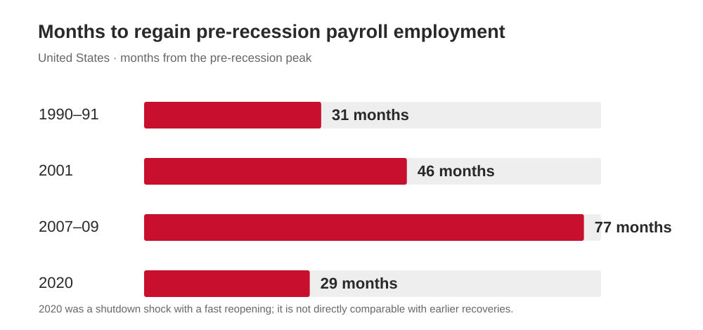

AI, Productivity & Structural Change
How AI Changes the Recession Recovery Math
Bottom line. Historical evidence suggests that downturns can concentrate occupational restructuring. Recent descriptive evidence of weaker early-career hiring in AI-exposed occupations raises the possibility that AI makes the next employment recovery more uneven across occupations and worker groups. Existing evidence does not establish whether AI will slow the aggregate employment recovery, or by how much. This note treats it as a risk to monitor, and lists the signposts below that would confirm or reject it.

The mechanism: downturns are when firms restructure
Two studies carry the historical case.
- Jaimovich and Siu find that 92% of the loss of routine-occupation jobs occurs within 12 months of NBER-dated recessions, and that aggregate jobless recoveries can be accounted for by those occupations. Job loss in these occupations arrives in recessions, not as slow attrition.
- Hershbein and Kahn analyse nearly 100 million online vacancy postings across 381 US metro areas (2007 and 2010–2015). In metros hit harder by the Great Recession, postings became about 5 percentage points (16%) more likely to ask for education and experience, relative to less-hit metros. The authors link this to firms restructuring toward routine-biased technology. Most of it persisted to the end of the sample in 2015: about 76% of the 2010 education effect was still there.
Both papers are about routine work, and neither is about AI. Extending the mechanism to AI is the argument of this note, not a finding of those studies.
What is new: exposure has moved up the skill ladder
- IMF (January 2024): about 60% of jobs in advanced economies are exposed to AI. Roughly half of those may benefit from integration. For the other half, AI may execute key tasks, which could lower labour demand. Exposure is not displacement.
- J.P. Morgan Global Research (August 2025): non-routine cognitive occupations are now about 45% of US employment, up from 30% in the early 1980s, and for the first time they make up a larger share of the unemployed than non-routine manual workers. The warning from its economist Murat Tasci is conditional: in the next recession, rapid AI adoption could cause large-scale displacement in these occupations. The bank's own read of the data at the time was that AI was not yet a major driver of employment composition, except perhaps in tech.
- Goldman Sachs (22 October 2026, as reported by Business Insider): its baseline now has AI displacing up to 9% of US workers, about 15 million, in the coming years. It expects the disruption to build gradually, and says “a cyclical slowdown would likely accelerate AI-related automation and job losses.”
What the data show today
| Source | Date | Finding |
|---|---|---|
| Anthropic Economics team (Massenkoff and McCrory) | 5 Mar 2026 | No systematic rise in unemployment for highly exposed workers since late 2022; the method could detect a differential of about 1 percentage point. Tentative slower hiring of 22–25 year-olds into exposed occupations: job-finding rate down about 0.5 points, roughly 14% relative to 2022, barely statistically significant. Observed use is far below feasibility: Claude covers about 33% of Computer and Math tasks. |
| Peter McCrory (Anthropic), as reported by Fortune | 24 Jul 2026 | US unemployment was 4.2% in June. He sees no significant AI impact on the US labour market so far and does not expect unemployment to be noticeably higher in a year because of AI. This is Fortune's account of his essay, which I could not read directly. |
| Stanford Digital Economy Lab (Brynjolfsson, Chandar, Chen) | Revised 12 Aug 2026 | ADP payroll data through June 2026. No evidence of widespread, economy-wide displacement. Employment of 22–25 year-olds in AI-exposed occupations is 19% below where it would be had it matched less-exposed peers (15% in the July 2025 data). The adjustment works through reduced hiring, not more separations. The authors call it descriptive, not causal, and the gap shrinks when education is controlled for. |
| Duke CFO Survey with the Atlanta and Richmond Feds, as reported by Fortune | 24 Mar 2026 | 750 CFOs. About 44% plan some AI-related job cuts. Expected losses are about 0.4% of roles (roughly 502,000) in 2026, about half of them white-collar. The survey director called it “not the doomsday job scenario”. |
How I read it
- The jobless-recovery channel is a hiring channel. A jobless recovery is weak hiring after the layoffs stop, not heavier firing. The one place AI shows up in the data today is entry-level hiring in exposed occupations, which is the margin that decides how fast a recovery rehires. This is my inference, not a finding of any study above.
- No recession, no restructuring test. Every dataset in the table above covers a period of roughly full employment, with US unemployment at 4.2% in June 2026. Jaimovich and Siu, and Hershbein and Kahn, show that restructuring happens when cost pressure peaks. Current data therefore cannot confirm or reject a recession-conditional effect. This is also my inference.
- What I would no longer claim. That knowledge workers are already showing up in unemployment statistics at historically elevated rates. The evidence does not support it. The earlier draft's stronger formulation is not supported by the evidence.
- The chart cuts both ways. The first three recoveries each took longer than the last: 31, 46 and 77 months. 2020 broke the pattern at 29 months, but it was a shutdown shock with fast reopening and large fiscal support, so it says little about restructuring recessions. No projection is drawn because no model supports a number.
- Fiscal implication, conditional. If the knowledge middle class rehires more slowly than in past cycles, sovereign debt and budget models that assume labour income and payroll-tax receipts rebound on the historical schedule are too optimistic. This follows only if the hypothesis holds.
What would change my mind
- Exposed versus less-exposed unemployment. A sustained rise in the gap, measured the way the Anthropic study does it, would confirm displacement. A flat gap through a downturn would weaken the thesis.
- Entry-level hiring. Job-finding rates for 22–25 year-olds in exposed occupations, and the Stanford employment gap (19% as of June 2026, up from 15%).
- The next downturn itself. Whether layoffs concentrate in exposed occupations, and whether those occupations rehire on the 2001 and 2007–09 schedule or the 2020 one.
- Consumption versus GDP. Whether consumption lags the output recovery by more than in past cycles. I have no source for this claim today, so treat it as a hypothesis.
Sources
Primary or near-primary
- Jaimovich and Siu, “Job Polarization and Jobless Recoveries”: NBER digest and working paper w18334.
- Hershbein and Kahn, “Do Recessions Accelerate Routine-Biased Technological Change? Evidence from Vacancy Postings”: AER and NBER w22762.
- IMF, Georgieva, 14 Jan 2024: AI Will Transform the Global Economy.
- J.P. Morgan Global Research, 15 Aug 2025: Is AI already impacting job growth?.
- Anthropic, 5 Mar 2026: Labor market impacts of AI: A new measure.
- Stanford Digital Economy Lab, 12 Aug 2026: update and paper page.
- BLS, Employment Situation, July 2022: release.
Secondary (press or commentary reports of the underlying work)
- Fortune, 24 Jul 2026, on McCrory's essay: article.
- Fortune, 10 Aug 2025, on the J.P. Morgan note: article.
- Fortune, 24 Mar 2026, on the Duke CFO Survey: article.
- Business Insider via Yahoo, on Goldman Sachs, 23 Oct 2026: article.
- RAND, July 2022, payroll recovery months: commentary.
Macro analysis for discussion, not investment advice.
← Back to research & reflections